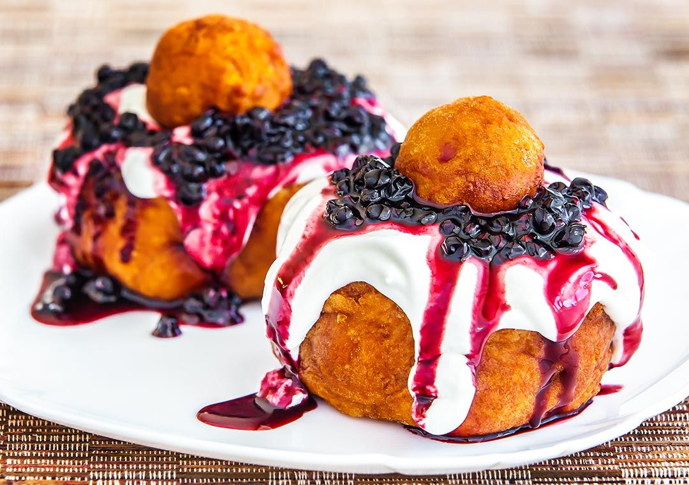

Papanasi

Romanians do not waste anything so they deep fry the round dough that was cut out of the doughnut's center and place it on top of the Papansi
(aka papanash) that is served with sour cherries jam and sour cream or whipped cream.
There is no need for me to say how good these fried dumplings are - in fact, they are extraordinary. My husband and my kids simply adore them and they are always happy when I cook these Romanian papanasi with cheese.
I've been studying the Romanian papanasi recipe on various websites and I chose this one, which is the simplest and has easy to get ingredients. It was a success! Now the VIDEO Recipe will help you even more, so I'm sure you'll be successful too! You must serve papanasi with sour cream and your favourite jam.
Ingrediente:
- 500G Farmers cheese(pick soft cow's milk cottage cheese with less whey - if it's too runny, you'll have to add more flour)
- 100g Sugar
- 2 eggs
- 200g white flour
- 1 piece of vanilla extract
- 0.25tsp Baking soda
- 200ml sour cream
- 100g Jam
- Salt
- Mix all ingredients. Let the mixture rest for one hour in the fridge but take it out of the fridge at least half an hour before frying the doughnuts. The mixture should be at room temperature before frying.
- Create little balls (ping pong size), dip them in a bowl of flour and remove excess flour. Flatten them with the palm of your hand and using a small round cookie cutter – cut out a hole at their center. Keep these little round "holes" for later. You'll deep fry them as well and serve them on top of the doughnuts.
- Heat oil for deep frying. The oil SHOULD NOT be very hot for this kind of doughnut ! In fact – it should only start sizzling when you plsce the doughnuts in it. Fry only 3-4 at a time.
- Turn each doughnut upside down every half a minute until it gets golden color on both sides.This will take several minutes.
- Absorb the oil with a paper cloth, place the doughnut on a serving plate, fill the hole with sour cream, sour cherries or strawberry and place the little dough circles on top.
- Eat immediately